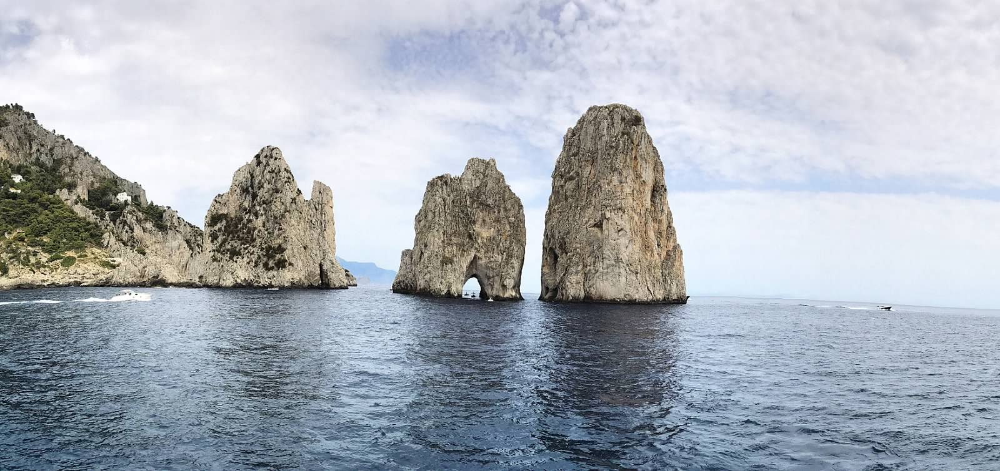
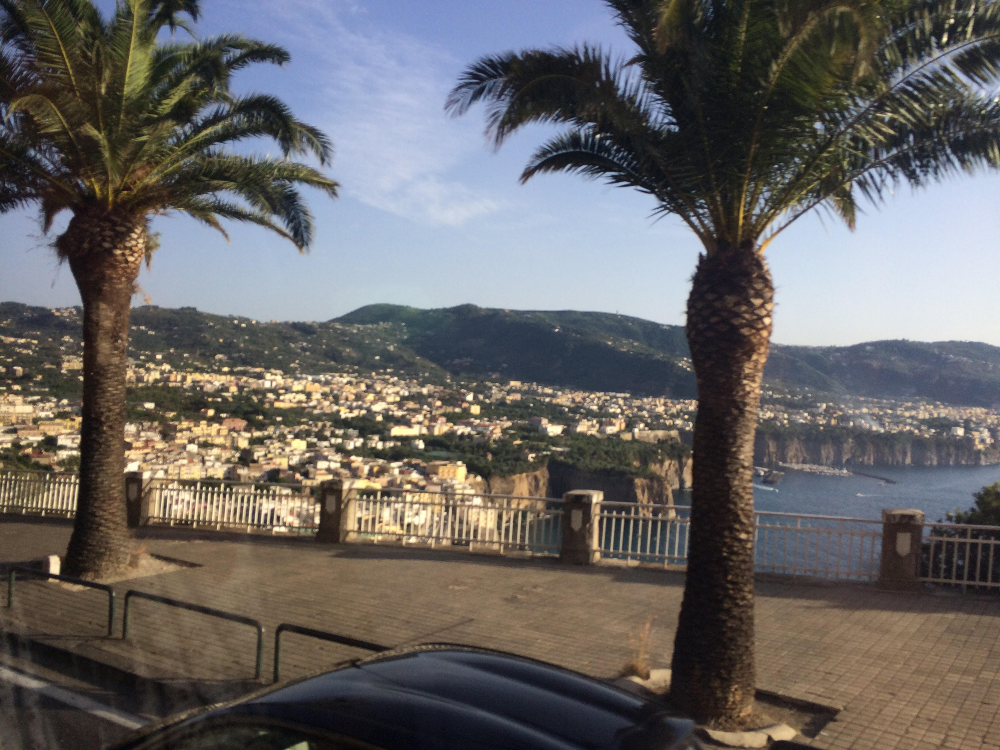

Here's a picture I took that most of you will recognize, these three rocks are known as Faraglioni and are found right off the shore of Capri..
Now here's a beautiful shot of the Roman Colosseum taken by a friend. By far one of the most fascinating landmarks to visit..

Next here you'll see just the outskirts of my favorite city: Sorrento. I wish I had taken more pictures while there but I was too intrigued..
Finally, the amazing Vatican in its country of it's own: Vatican City. Although there's multiple NO PICTURE signs, everyone was taking pictures.